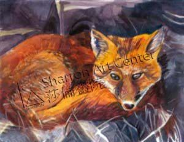

莎伦学生获国际青少年艺术交流计划等大奖
纽约世界瞩目儿童博物馆主办的2013国际青少年艺术交流计划由莎伦画院学生Kyle He获得K-2年级第二名，Jonathan Qi获3-5年级评审奖，Rebecca Yang、Linda Luo和宾州莎伦学生芝田佳山获6-12年评审奖（不设第三名），Gloria Zhao、Jessica Yu、Cathy Wang 、Yanjie Qiu、Joyce Lu、Hellen Yang、Lindsey Shi、Taryn Peng皆获优异奖。 该博物馆刚刚又选送莎伦学生作品赴世界多国，被博物馆永久收藏：作品送往Macedonia的是Derek Huang、Sonia Borlaug、斯里兰卡的是Winnie Zhu、乔治亚共和国的是Claudia Lim、俄国和罗马尼亚的分別为Alison Chow和Evan Deng。 国际动物福利基金会2012-2013动物绘画比赛，15位首奖得主不分排名，莎伦学生为Neethu Pottackal、Erika Koplitz、Liane Emerson；获优异奖的莎伦学生为：Mallissa Vuong、Sonia Borlaug、Katrina Abad、Anna Lin、Henry Mo(NY分校)。 全美学者读书俱乐部的“我爱阅读”绘画赛全美10位不分排名的得奖人，有4位莎伦学生：Jonathan Yue、Joyce Huang、Rebecca Z、Guanyi C，使新州再次成为得奖最多的州。 全美州鱼绘画赛，新州莎伦学生：10-12年级第一名是赖君雅；石孟生获7-9年级第二名；Brandon Li 获4-6年级第三名。莎伦学生Kari Mau获纽约10-12年级第二名。莎伦学生Steven Song获宾州7-9年级第二名。 新州野生鱼保护协会绘画赛，莎伦学生Cathy Chi和Brenden Li分获10年级和6年级第一名。Brenden并获全美野鸭邮票设计比赛新州第一名。 美国与加拿大艺术庆典画册（Celebrating Art）莎伦画院再度囊括最多奖，作品入选画册的莎伦法拉盛分校有37位学生，全部中选，主办单位特发来贺信：“从来没有见过这么杰出的创作！”30多位新州莎伦学生，如Gloria Xu、Wisdon Zhang、Ellen Guo、Bettina Chou等也入选出版。 (2013)